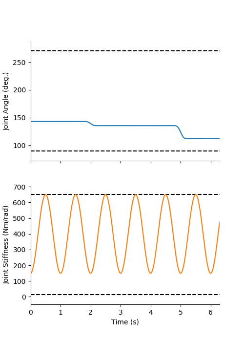
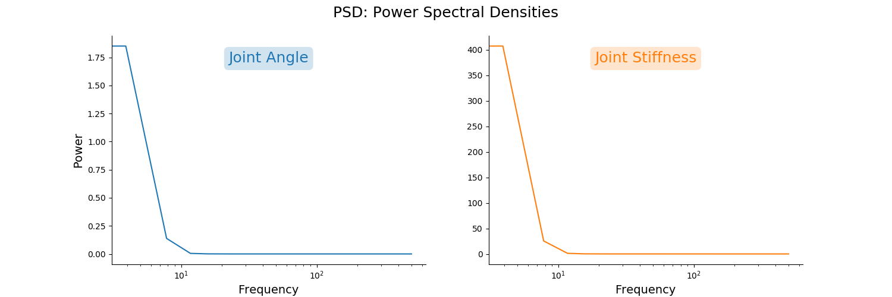
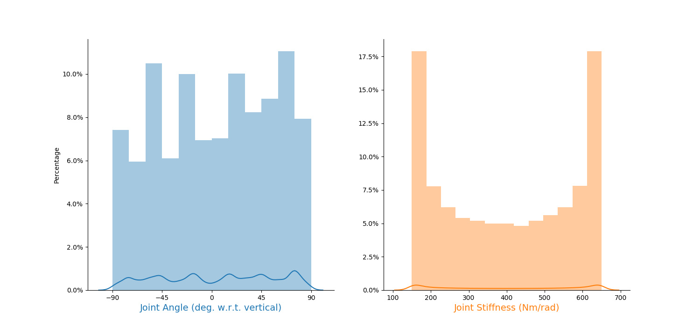
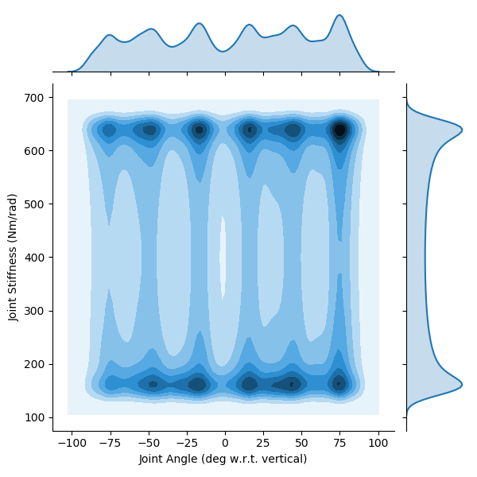
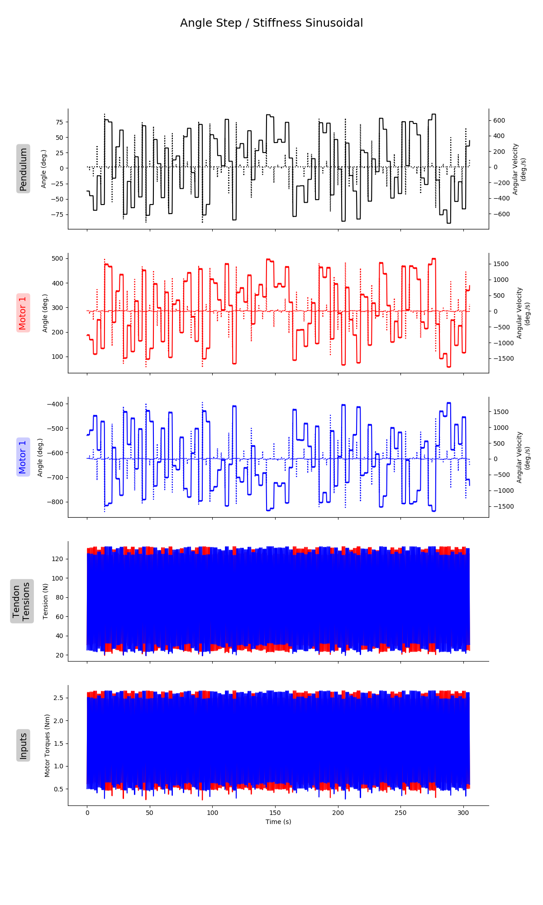
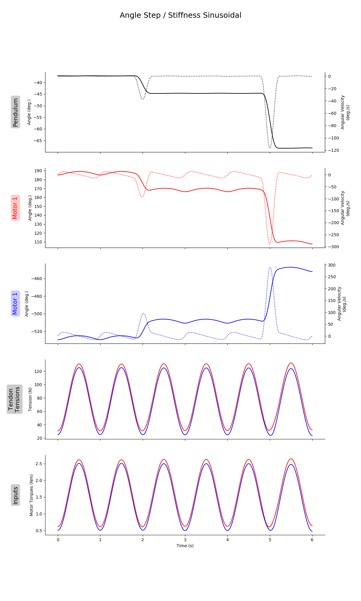
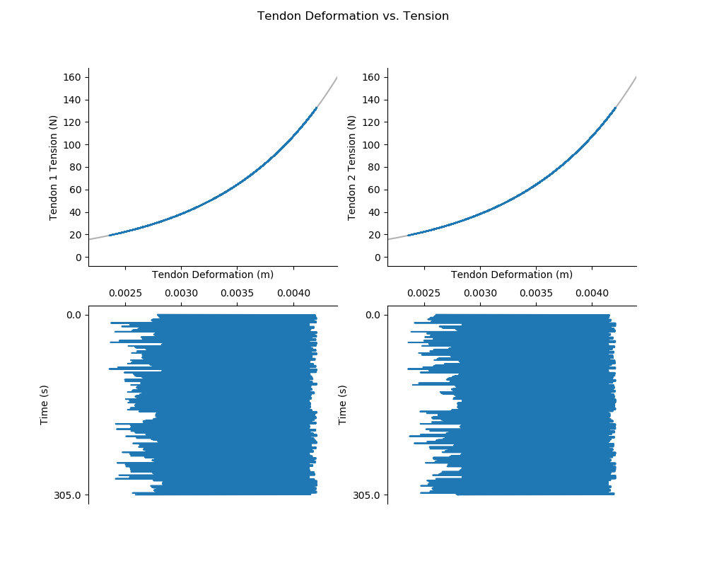

README.md for Figures Created on 2020/05/18 at 15:09.43 PST.
Notes
Add Notes Here.
Parameters
params = {
'Extra Steps' : 5,
'Step Duration' : 2.0,
'frequency' : 1,
'numberOfSteps' : 100,
'stiffnessRange' : [150, 650],
'angleRange' : None,
'delay' : 0.3,
'Tendon Stiffness Coefficients' : {'Spring Shape Coefficient': 1000, 'Spring Stiffness Coefficient': 2.0}
}Figures
 Figure 1: Caption for high_tendon_stiffness_01-01.png.
 Figure 2: Caption for high_tendon_stiffness_01-02.png.
 Figure 3: Caption for high_tendon_stiffness_01-03.png.
 Figure 4: Caption for high_tendon_stiffness_01-04.png.
 Figure 5: Caption for high_tendon_stiffness_01-05.png.
 Figure 6: Caption for high_tendon_stiffness_01-06.png.
 Figure 7: Caption for high_tendon_stiffness_01-07.png.